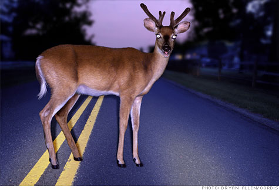

Wildlife Driving Safety Tips

Do's & Don'ts
- Follow speed limits. Many animals are hit simply because people drive too fast to avoid them. This makes the roads safer for other drivers and pedestrians, too.
- Watch for wildlife in and near the road at dawn, dusk, and in the first few hours after darkness.
- Keep in mind that where there is one animal, there are probably others—young animals following their mother or male animals pursuing a female.
- Bee especially cautious on two-lane roads bordered by woods or fields, or where streams cross under roads. Most animal/vehicle collisions occur on these roads. Slow down to 45 mph or less.
- Scan the road as you drive, watching the edges for wildlife about to cross. This will also make you more aware of other hazards such as bicyclists, children at play, and slowly moving vehicles.
- Don’t throw trash out car windows. Discarded food pollutes the environment and creates a hazard by attracting wildlife to the roads.
- Use your high beams whenever possible.
- Lower your dashboard lights slightly. You'll be more likely to see your headlights reflected in the eyes of animals in time to brake.